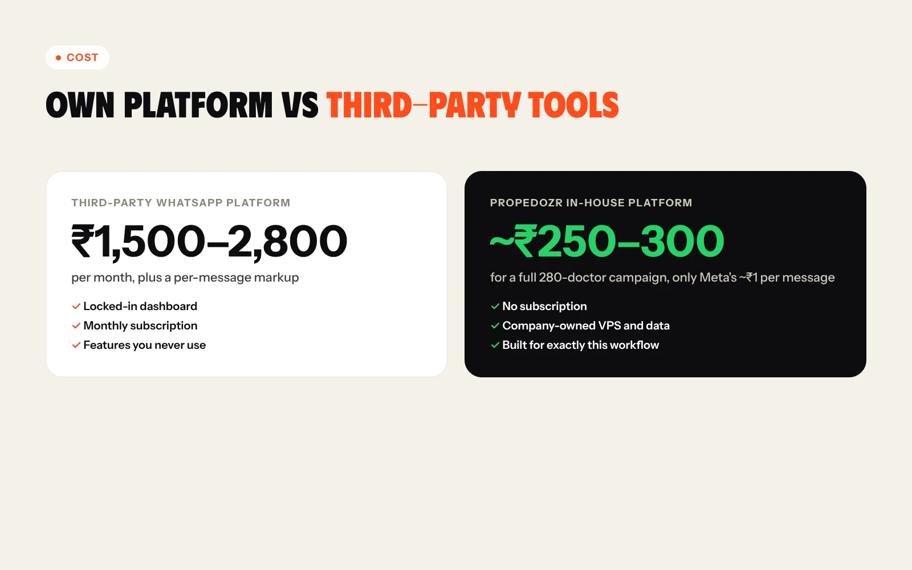

ProPedoZR – WhatsApp Doctor-Outreach Platform
A self-hosted WhatsApp Business API campaign platform that sends personalised, Meta-approved messages to 280+ pediatric dentists, with no monthly subscription.

- The problem
ProPedoZR needed to send personalised offers to 280+ pediatric dentists, but third-party WhatsApp tools cost ₹1,500–2,800 a month plus a markup on every message.
- The solution
An in-house campaign platform on the official Meta WhatsApp Cloud API, self-hosted on the company's own server, with personalised templates, safe batching, tracking and a dashboard.
- The result
Live: 150 doctors messaged on day 1 with 0 failures. A full 280-doctor campaign costs about ₹250–300 in Meta fees, with no subscription.
01The challenge
ProPedoZR makes premium pediatric zirconia crowns and works with 280+ partner dentists. Every doctor needed a personal message: generic broadcasts get ignored, and they only reach people who have already saved the number.
Third-party WhatsApp platforms meant a monthly fee, a markup on every message and a dashboard full of features we'd never use. Replies had to reach a number the team actually reads, not a bot inbox. And a brand-new sender number is fragile: send too much too fast and it gets flagged within hours.
02My approach
Build a self-owned, low-cost, compliant system on the official Meta WhatsApp Cloud API, hosted on the company's own server. Every message uses a Meta-approved template personalised with the doctor's name, sending happens in small batches to protect the number, and every reply goes to a person.
The only running cost is Meta's per-message fee, about ₹1 a message, with no subscription.
The solution, step by step
Personalisation at scale
Every message opens with Hello Dr. and the doctor's name, filled into the approved template's variable, so no two doctors get an identical-looking blast. The template carries the crown offer (personalised clinic poster, clinic education kit and easy size exchange) and a Chat on WhatsApp button.
End-to-end pipeline
Contacts are imported and cleaned into MySQL, a campaign runner sends through the Meta Cloud API, and a webhook brings delivery receipts, read receipts and replies back into the database.

Password-protected dashboard
Import contacts, create a campaign and send it in batches with a live progress bar, per-message results and tiles for sent, remaining, failed, read and replies, plus campaign history.

Anti-ban batching and warm-up
Messages go out 20 at a time with a 300 ms gap, and day 1 was capped at 150, under the new-number limit, to protect the sender's quality rating before scaling.
Replies reach a human
Meta doesn't allow direct wa.me links in template buttons, so the button points to a redirect page on the company's own domain that forwards to the team's staffed WhatsApp number.
Contact hygiene
A cleaning pipeline parses PDF, DOCX and raw contact dumps, normalises numbers, removes duplicates and strips non-doctor contacts (own numbers, other-brand contacts, patients, vendors, labs, landlines) that could trigger spam reports.
Meta verification and security
Completed Meta Business Verification, registered the sender number and got the display name approved. Secrets live in a config file that isn't web-readable, credentials were entered directly on the server, and the dashboard is password-protected and not indexed.
Built for less, not more
Compared with a third-party platform, the in-house build removes the subscription entirely: a full campaign costs only Meta's message fees.

What changed
- Live on company-owned infrastructure with a Meta-verified business and approved template
- 150 doctors messaged on day 1, each personalised, with 0 failures
- 280 doctors loaded; the remaining 130 scheduled the next day within safe limits
- About ₹250–300 per 280-doctor campaign, versus ₹1,500–2,800 a month for a third-party platform